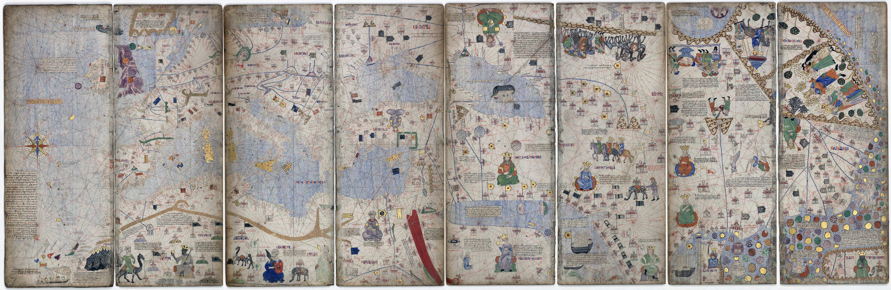
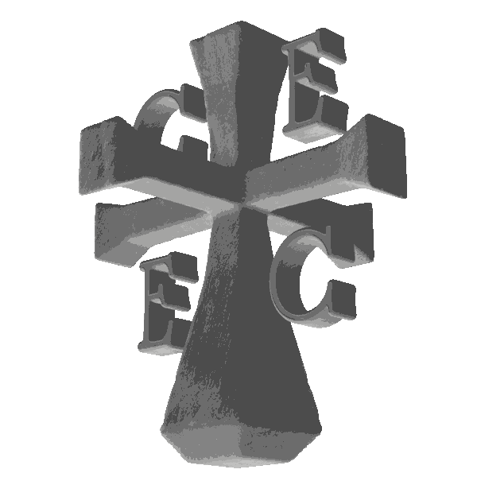

The map is the Catalan Atlas, made in Majorca in 1375 and attributed to Abraham Cresques.
Type where you walk from and where you walk to. ECCE ATLAS follows the old roads and counts the days, the kilometres and the chance of arriving alive.
The days and the chances are estimates.